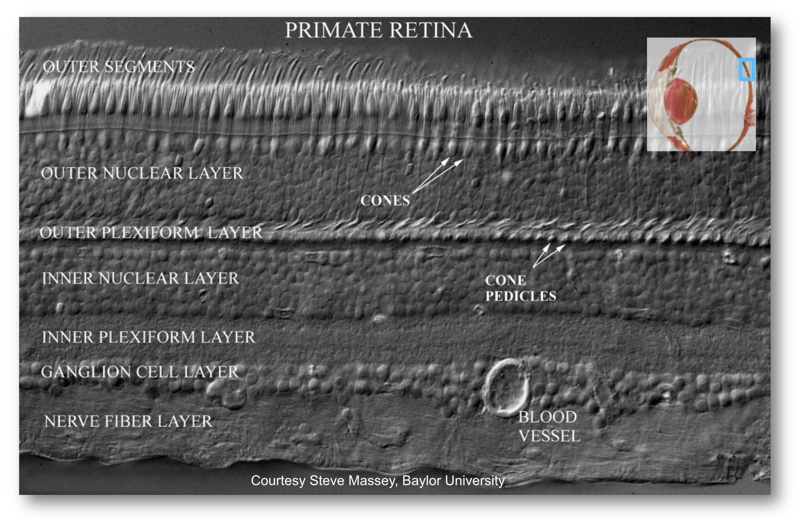

22 Human visual encoding
The book is still taking shape, and your feedback is an important part of the process. Suggestions of all kinds are welcome—whether it’s fixing small errors, raising bigger questions, or offering new perspectives. I’ll do my best to respond, but please keep in mind that the text will continue to change significantly over the next two years.
You can share comments through GitHub Issues.
Feel free to open a new issue or join an existing discussion. To make feedback easier to address, please point to the section you have in mind—by section number or a short snippet of text. Adding a label characterizing your issue would also be helpful.
Last updated: October 28, 2025
The material about human vision in this chapter is under development, and the text is not ready to be reviewed.
Please refer to the chapters in Foundations of Vision.
22.1 Human visual encoding overview
When you design a digital camera, how good does it need to be? The answer depends on who you’re designing it for. If the images are for a human to look at, then the camera’s design must be guided by the capabilities and limits of the human eye. This simple principle has profound consequences for engineering.
Vision scientists have learned a great deal about the first stages of vision. We have excellent measurements of how the eye’s optics (the cornea and lens) transform light from the world into an image on the retina, and we know how the retina’s photoreceptors encode that image into neural signals. This knowledge is not just academic; it’s a practical guide for designing any system that reproduces images for people.
Consider color. A camera designed for human viewing should capture the same portion of the electromagnetic spectrum that we see: visible light. Capturing less of the spectrum would lead to poor color reproduction. Capturing more—like infrared or ultraviolet—would be wasteful, consuming resources to record information we can’t see anyway. In this sense, human wavelength sensitivity sets a clear target for camera design.
Spatial resolution presents a different challenge. It would be a disappointment if a camera failed to capture details as fine as those the human eye can resolve. We expect our photos to be at least as sharp as what we see. However, unlike with color, people are often pleased if a camera captures a scene at a finer resolution than the eye can perceive. We can always zoom in on the digital image to see details we might have missed. This extra information doesn’t interfere with the viewing experience; it just requires more storage and processing power.
So, we have two different engineering constraints derived from human vision:
- Wavelength: Human vision sets a target range. Capturing more is wasteful.
- Spatial Resolution: Human vision sets a minimum bar. Capturing more can be beneficial.
In this section, we will review the key properties of the eye that define these limits. The way our visual system samples space and encodes wavelength creates fundamental bottlenecks on what we can perceive. Understanding these limits doesn’t explain everything about what we see, but it tells us what we cannot see—essential knowledge for the field of image systems engineering.
22.2 The Two Stages of Encoding
The process of converting light from the world into a neural signal that the brain can interpret happens in two main stages, as illustrated in ?fig-eye-and-retina.
First, the physiological optics—the cornea and lens—act like a camera lens. They gather the light entering the eye and focus it to form an image on the retina. This stage transforms the light from the environment into a focused optical image.
Second, the retina, a thin layer of neural tissue lining the back of the eye, converts this optical image into electrical signals. This process, called transduction, is performed by specialized cells called photoreceptors. The signals from the photoreceptors are then processed by a complex network of other retinal neurons. The final output is sent to the brain by the retinal ganglion cells (RGCs), whose axons bundle together to form the optic nerve.
A key feature of the retina is that it operates as a feed-forward system; there is no direct neural feedback from the brain to the retina. This simplifies our analysis, as we can study the retina’s input-output relationship without accounting for top-down signals from other brain regions—a luxury not often afforded when studying the nervous system.
However, the brain also sends signals to the eye that control the size of the pupil and the optical power of the lens. The brain also provides an important indirect form of feedback by controlling eye, head, and body positions. These signals determine which part of the visual world is projected onto the retina. All of these signals are essential for seeing.
22.3 Physiological optics
The cornea and the flexible lens work together to focus light, forming an image on the retina, as shown in ?fig-physiological-optics. This optical system is dynamic, constantly adjusting both the amount of light it lets in and its focal point.
The amount of light entering the eye is controlled by the pupil, the aperture that can dilate (open) to about 8 mm in diameter in dim light or constrict (close) to about 2 mm in bright light. This change in area adjusts the light intake by a factor of about 16 (or 1.2 log units). While significant, this is a small adjustment compared to the vast range of light levels in the natural world, which can span over 10 log units. The pupil’s size changes automatically in response to light, but it is also influenced by cognitive and emotional states, such as arousal or mental effort.
The eye changes its focus through a process called accommodation. Neural signals control the ciliary muscles, which are connected to the lens. To focus on distant objects, the ciliary muscles contract, which increases the diameter of the ring they form and pulls on the zonule fibers, flattening the lens. To focus on nearby objects, the muscles relax, allowing the lens to return to its natural, more rounded shape, which increases its optical power.
This remarkable flexibility is not permanent. With age, the lens gradually stiffens, reducing its ability to change shape. This condition, known as presbyopia, makes it difficult to focus on near objects. It typically becomes noticeable in one’s early to mid-40s and is a natural part of aging, commonly corrected with reading glasses. It happens to all of us.
22.4 Retina
Since the 1990s, vision scientists have been able to measure the quality of the physiological optics. In the sections below, I will summarize these measurements and the techniques that were invented to make them. I will also explain how to simulate how the incident light field is transformed into the retinal image using ISETBio. For me, it is important to understand these optics in terms of the photoreceptor sampling array. Knowing that an image is spread over 5 microns can mean one thing if the photoreceptors are sampled every 2 microns and something quite different if the photoreceptors are sampled every 10 microns. So before we talk about the physiological optics, let’s consider the retina and particularly the photoreceptor mosaic.
The retina is approximately \(200–300\) microns thick near the posterior pole, varying from about \(100\) to \(500\) microns across the retina. Its total area is on the order of \(10–12~cm^2\). It is a laminated neural tissue comprising three nuclear layers separated by two plexiform layers. There are on the order of 80 different cell types that can be identified through their genetic expression, responses to light, and anatomical form. The retinal cells form stereotyped connections, which we call retinal circuits. We believe that there are about 20 such circuits. The circuit outputs, carried on the retinal ganglion cell axons in the optic nerve, project to a variety of locations in the brain.
The vast majority of light-driven activity is initiated in the photoreceptors (rods and cones). The rods are the dominant source under very low light levels, and the cones are the dominant source under moderate to high light levels. The typical retinal circuit is driven by activity that starts in a local region of the photoreceptors. The same basic circuit will be present throughout the retina, tiling the photoreceptor mosaic, though the absolute size of the cells and their input regions generally vary across the retina. The size of the region increases as one measures from the highly specialized central fovea into the periphery.
There is one important and interesting exception, only recently discovered. There exists a class of retinal ganglion cells that contain a light-sensitive pigment (melanopsin). These cells, called the intrinsically photosensitive RGCs (ipRGCs), absorb photons and respond to overall light level. There are not a lot of these cells, but their outputs are important for circadian rhythms and pupillary control. They may also influence other aspects of vision.

22.5 Cone spatial sampling
The rod and cone photoreceptors are specialized neurons whose principal function is to convert electromagnetic radiation into a neural signal. Both types of photoreceptors accomplish this using a light-sensitive pigment (photopigment). This pigment absorbs photons and, in so doing, initiates a chain reaction of events within the cell (Stryer (1986)). These events, the transduction cascade, result in a change in the synaptic signal from the photoreceptor. The spatio-temporal pattern of changes across the photoreceptor mosaic is the signal that the nervous system interprets and the basis of our sight.
The arrows at the bottom indicate the direction of the incoming light (the lens is below). The light arrives at the photoreceptor layer, brought into focus by the physiological optics. Some of the light enters the cell through the inner-segment aperture. Because of the refractive-index contrast between the inner segment and surrounding medium, the inner segment acts as a waveguide that directs the light toward the outer segment, where it initiates the transduction cascade.
The rod and cone photoreceptors are two largely distinct systems. The rods are mainly used to provide vision under low light levels (scotopic; e.g., nighttime). There is only one type of rod photopigment, rhodopsin. For this reason the rod system provides no information to compare the different wavelengths of light incident at the retina.
The cone photoreceptors dominate vision at modest to high levels of illumination. There are three types of cones, containing three different photopigments. These photopigments absorb over a fairly broad wavelength band, but they have different peak sensitivities in the long-, middle-, and short-wavelength parts of the visible spectrum. I will cover more on this in the color section below.
The spatial resolution of the human eye depends on the aperture size and spacing of the photoreceptor inner segments, particularly for the cones. A great deal was discovered about the sampling mosaic in the 1980s and 1990s Curcio et al. (1990). Prior to that time, the nature of the cone sampling mosaic and the importance of sampling were not widely appreciated. The importance of sampling was emphasized by Yellott and colleagues, who analyzed the spatial sampling. William Miller and Joy Hirsch, at Yale, were among the first to crisply show the dense packing (Hirsch and Miller (1987)). Over small patches of the primate retina the packing is quite dense (Figure 22.10), in a spatial arrangement called a triangular (hexagonal) packing.

How does the spatial sampling of the cones compare to the optical PSF? One comparison we can make is for the central fovea. There the inner-segment apertures are about 1.5–2 microns in diameter. Using ISETCam we can calculate the diffraction-limited Airy disk diameter (first minimum) for a 550 nm light. For a 3 mm pupil, the f-number of the human optics is 17 mm / 3 mm ≈ 5.6. Using Equation 7.2, this is:
>> radius = airyDisk(550,5.6,'units','um','diameter',true)
radius =
7.5152Thus, a tiny point in the scene -say star light- will be spread over a diameter of about 7 microns on the retinal surface, which corresponds to a little more than 3 cones. Under typical natural vision conditions, no stimulus excites a single photoreceptor. The nervous system must always interpret the signal from multiple cones, even if it draws the inference that the source is a single, tiny point.
One reason for creating such a system is that it enables us to judge the wavelength of the source better. By spreading the light across 5-10 cones, we are likely to sample the light using more than one type of photopigment. We saw a similar principle when reviewing the color filter array in cameras; early camera designers introduced blur the light from a small point to be measured by the R,G and B camera pixels (Section 17.3.2). But, what is the arrangement of the different cone types in the human eye?
Data on this point also emerged in the 1980s and 1990s.

22.6 PSF at the cones
We are ready to describe the optical spread with respect to the cone mosaic image. We needed the retina and the photoreceptor sampling mosaic defined so we could make sense of the whoe system.
Illustrate a white light? Show a range of eccentricities here with a FISE script that gets the proper wvf as a function of field height.
22.6.1 PSF Wavelength dependence.
Illustrate large impact of chromatic aberration
The short wavelength light is focused at the RGC layer when the middle wavelengths are in good focus at the inner segment.
22.6.2 PSF field height dependence
Artal data. Point to ISETBio and maybe the other book.
This callout is a mess. Too much going on. Lots of rewriting ahead.
22.6.3 Shack–Hartmann wavefront sensor
Johannes Franz Hartmann was a German astronomer working on the problem of detecting optical defects in telescope objectives. Reasoning from the ray theory of light, he measured the optical light field from a simple stimulus: an on-axis point at the focal length of the lens. In principle, the rays emerging from an ideal lens would all be parallel to the main axis. To look for deviations, he created a screen comprising an array of pinholes. If the rays were parallel, the light through the pinhole would be nicely centered behind the pinhole. If the rays were not quite parallel, the image behind the pinhole would be displaced by some distance and amount from the center. The deviations could be considered defects in the lens that could be corrected.
As I observed above, the image behind each pinhole measures the intensity of the rays incident at different angles. But in practice, a small pinhole produces a blurry spot due to diffraction. Thus Hartmann did not try to extract an image but he just estimated the central position of the blurry spot. Also, because the pinholes only let through a small amount of light, the technique was not very sensitive.
Because there is an array of these pinholes, the accumulation of pinhole images measures the rays at multiple angles at multiple positions. In principle, by performing this measurement for different wavelengths and polarizations, we sample the optical light field (Equation 2.3).
22.6.4 Ground-based telescopes
These same technologies can be used to look inward, within the eye, rather than outward toward the stars. Realizing this was a very important insight that continues to lead to important insights about the peripheral human visual system (Section 21.1).
22.6.5 Adaptive optics
Where should the adaptive optics measurement method be? Here or FOV? Adaptive optics measurements of wavefront aberrations, expressed as point spread functions. Thibos and Artal data.
The ability to measure certain properties of the optics was revolutionized by adpative optics - a method that makes real time measurements of the wavefront aberrations of the physiological optics using a Shack-Hartmann wavefront sensor. Just the measurement of the aberrations alone is useful. In addition, it has proben possible to engineer systems that correct for these aberrations in real time, and thus visualize the apertures of the photoreceptors (1-5 \(\mu \text{m}\) diameter) cells in the retina. Further, using video tracking of the eye movements it has proven possible to deliver stimuli to specific, targeted photoreceptors.
First order approximations of the human optics. Simulations with ISETBio of maybe the Westheimer or Ijspeert functions. Eye models?
22.7 Photoreceptor spatial sampling
Maybe point mainly to the other book. Image showing the fovea and inhomogeneous sampling of the photoreceptor mosaics. Maybe Curcio. Maybe the S-cone image sampling mosaic. Adaptive optics measurements of retinal sampling Rods, ipRGCs, too in here. Other book - ISETBio: Examples of simulation. David also has these new measurements.
22.8 Photoreceptor wavelength encoding
The neural tissue of the retina lines the curved surface at the back of the eye. The retina is about 5 x 5 cm, and its properties vary considerably across space. The retinal image is converted into a neural signal by a special class of neurons, the photoreceptors. The retina contains many types of specialized cells that combine into stereotypical local circuits. Multiple copies of these local circuits, but usually with different parameters, are present throughout the retina. The circuit outputs leave the retina via the optic nerve. One of the ways we can identify these circuits is that their outputs are transmitted to multiple brain regions. The circuit properties are dynamic in the sense that the circuit response to a simple stimulus, say a small flashed spot, varies with changes in the mean and variance of the retinal image.
There are some similarities between the eye and a conventional camera. For example, the optics and light sensing components are integrated into a single package, and the components are adaptive with respect to light level and focus. But there are lots of differences, as well. One major difference is that the retinal encoding does not sample the image uniformly; it is very inhomogeneous compared to modern cameras. The central human retina is specialized for the cone photoreceptors, which have small (~ 1.5 um) apertures and are tightly packed. The size of the photoreceptor apertures increases significantly from fovea to periphery, and the receptors for nighttime vision (rods) are inserted between the cones, further increasing their center-to-center spacing. This spatial sampling is quite unlike a typical image sensor whose pixels are all of the same size. Finally, the human visual system relies on eye movements to bring regions of interest into focus at the fovea. The keep integration of eye movements is very important for such a spatially inhomogeneous system.
I will describe measurements of the optics and encoding in several sections below. These are selected to support calculations of image quality and engineering design. For more about the biology and the scientific methods used to derive these measurements, consult (Wandell 2024)
22.9 Wavelength encoding
22.9.1 Color-matching
22.9.2 Human chromatic aberrations
fise_human* script exists.
Wavelength dependence (chromatic aberration)
22.10 Retinal prostheses
Now that we know so much about the retinal encoding, the Palanker project would fit well.
THe Chichilnisky project gets thrown in at the end as next generation. Palanker fits well with the cones going forward. The Chichilnisky project fits well with motivating why we want to know what the retinal circuitry does so we address diseases when the bipolar cells (inner nuclear layer) are damaged.